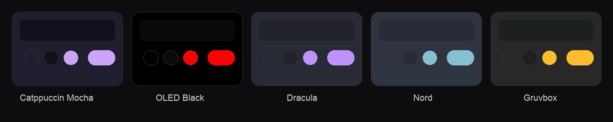

YouTube on the Steam Deck, done properly
DeckTube loads YouTube's own TV interface, the one your PlayStation, Xbox and smart TV run, and wraps it in a native app built for the Steam Deck controller. Because it is the real interface and not a copy, every animation and transition is exactly what you get on a console.
Full controller navigation
The stick and d-pad move the focus, A selects, B goes back, X searches. It feels like a console app because underneath it is one.
No ads
Video, feed and Shorts ads are stripped from YouTube before the player sees them. SponsorBlock and DeArrow are built in too.
Tuned for the Deck
Launches fullscreen, disables AV1 so video decodes in hardware, and keeps the interface at a steady sixty frames per second.
A proper boot animation
The YouTube logo plays on launch and hands off to the interface with no blank window and no flash.
Colour themes
Catppuccin Mocha, OLED Black, Dracula, Nord and Gruvbox, all chosen from the DeckTube panel with the controller.
Clean up panel
Hide Shorts, remove the Ask button, end screens, info cards, autoplay and the "are you still watching" prompt.
Themes that match your setup
Restyle the whole interface from the DeckTube sidebar. Themes only change colours, so they never get in the way of navigation.

Install on your Steam Deck
- Switch to Desktop Mode and download DeckTube-x86_64.AppImage from the releases page, then make it executable.
- In Steam, choose Add a Non Steam Game and point it at the AppImage.
- Switch back to Gaming Mode and launch DeckTube from your library.
- It opens fullscreen, plays the boot animation and drops you straight into YouTube, all controller navigable.
Frequently asked questions
How do I watch YouTube on the Steam Deck?
Install DeckTube. It is a free app that loads YouTube's own TV interface and is navigable entirely with the Steam Deck controller. Download the AppImage from the releases page and add it to Steam as a non Steam game.
Does DeckTube block ads?
Yes. DeckTube removes video, feed and Shorts ads from YouTube before the player ever sees them, and includes SponsorBlock to skip sponsor segments.
Is DeckTube free?
Yes. DeckTube is free and open source under the MIT licence.
Does DeckTube have controller support?
Yes. The whole experience is built for a controller, because it loads the real YouTube TV interface that consoles use.
What is the best YouTube app for the Steam Deck?
DeckTube is built specifically for the Steam Deck, with fullscreen launch, hardware decoding, controller navigation, ad blocking and a clean up panel to remove features you do not want.